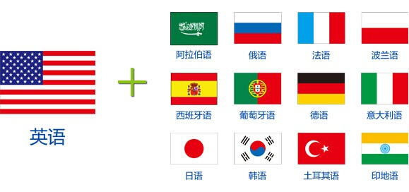

首页 » 多语网站建设
解决语言障碍：多语网站建设
您的外贸营销平台是否解决语言障碍您的外贸营销平台是否覆盖移动互联网您的外贸营销平台是否让采购商优先选择
上海赢擎专注于外贸网络营销，拥有专业的网站建设团队，帮助外贸企业搭建多语言外贸营销平台，解决外贸语言障碍的同时实现全面覆盖传统互联网和移动互联网，让您的采购商无论在哪个国家，使用哪种语言都能随时用自己熟悉的语言、日常的浏览习惯了解企业的信息和产品，通过赢擎专业外贸领域的营销人士对于您外贸营销平台信息内容的策划，最高程度转化您的客户。
多语网站建设服务
1、18种语言营销平台，全面覆盖世界每一个角落
正如我们所知，我们的平台覆盖越广，销售渠道越多，市场机会就越大。赢擎本土网络营销 ，让采购商用自己的语言和搜索习惯了解企业的产品和信息，让企业轻易被采购商找到进而获得精准客户，从而实现订单成交和业绩增长！

2、PC网站、手机网站，网尽所有客户
智能手机不断发展，移动互联网时代已经来临，客户无处不在！赢擎多语建站为企业提供功能齐全的传统互联网PC网站外，还提供移动互联网时代的手机网站建设，网尽所有客户。
3、外贸营销领域专业营销内容策划，提升客户访问深度
赢擎拥有外贸营销领域专业人士，深刻理解企业如何策划海外营销内容，通过区别于大众信息介绍的方式，立足于海外客户采购产品的角度，进行网站内容的策划，促使客户对信息的深度访问，最大程度的转化访问客户